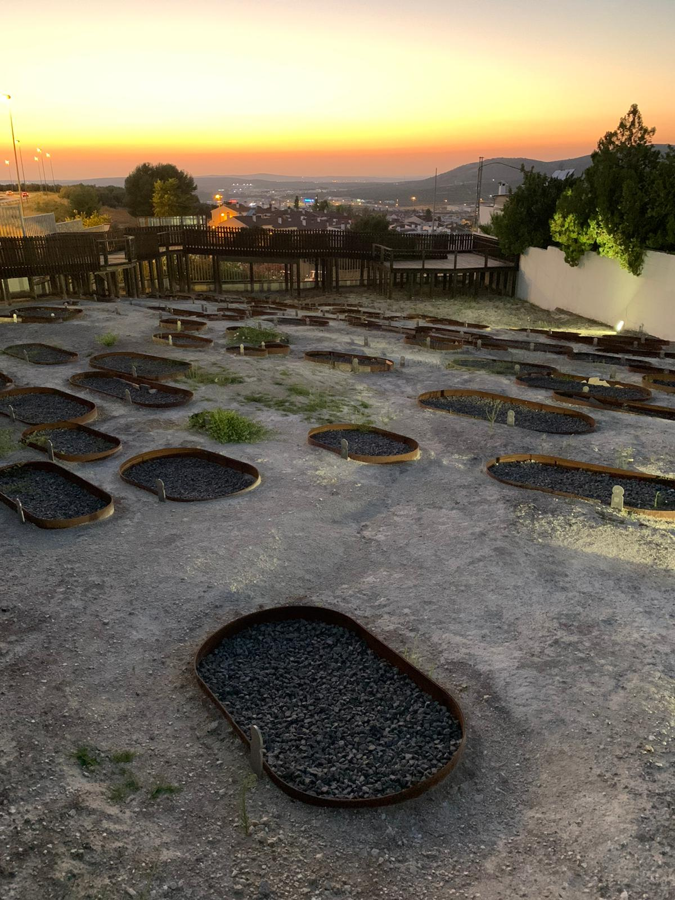
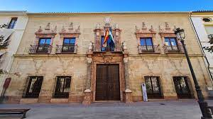
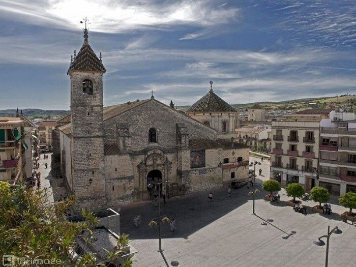
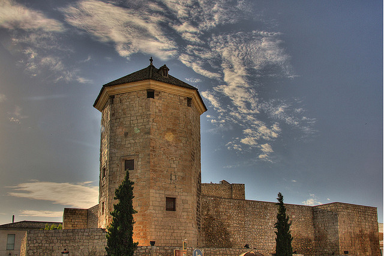

LUCENA

Lugares de interés
La necrópolis judía de Lucena
Lucena destaca por su necrópolis judía, descubierta en 2006 con la lápida del rabí Lactosus. Con 396 tumbas, es el mayor cementerio judío de España. La presencia de un gigante de 2.2 metros añade singularidad al sitio. Desde su apertura en 2013, atrae a turistas sefardís(descendientes de los judíos) de todo el mundo, consolidando a Lucena como un destino cultural fascinante.
Palacio de los Condes de Santa Ana
El Palacio de los Condes de Santa Ana, ejemplo destacado de la arquitectura civil del siglo XVIII en Lucena, construido entre 1730 y 1750, alberga actualmente el centro de interpretación de Lucena. Su llamativa escalera de mármol, resaltando el color añil del estaño lucentino, y la bóveda atribuida a Francisco José Guerrero y Pedro de Mena Gutiérrez son aspectos notables. La imagen de San Pedro y Jesús, también atribuida a Pedro de Mena, se exhibe en el palacio. En la misma calle, la Iglesia de San Martín del siglo XVII presenta un impresionante retablo mayor de Martín de los Reyes.
Plaza Nueva
La Plaza Nueva, el corazón de Lucena, tiene su origen en 1620, dos años después de que el rey Felipe III concediera a la ciudad el estatus de ciudad. A lo largo de los años, esta emblemática plaza ha llevado diferentes nombres, como plaza real, de la República, de la Constitución, de Alfonso XII, del Generalísimo, pero siempre ha conservado su identidad principal como la Plaza Nueva. Su rica historia y variedad de denominaciones reflejan la evolución y la importancia duradera de este lugar en la vida de la ciudad.
Castillo del Moral
El Castillo del Moral, fortaleza almohade del siglo XII en Lucena, es ahora el Museo Arqueológico y Etnológico. Monumento Nacional desde 1931, remodelado como Palacio de los Duques de Medinaceli, su Torre del Homenaje fue prisión de Boaddil en 1483. El nombre proviene de una emorá con la representación de una morera. Las salas ofrecen un recorrido histórico desde el paleolítico con destacado yacimiento arqueológico.